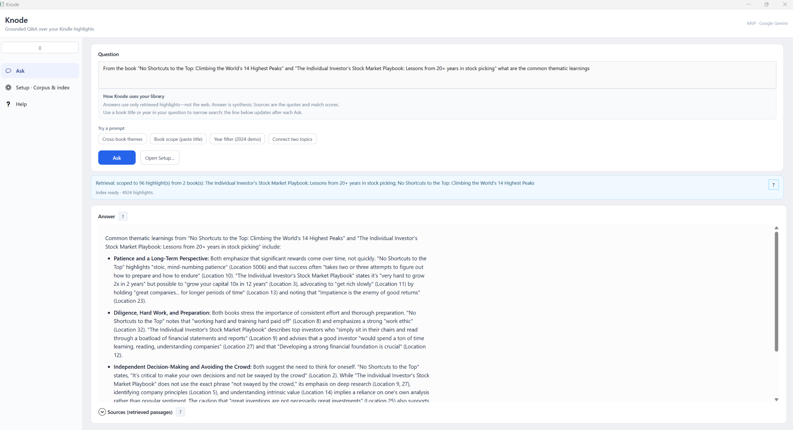

Knode: Grounded answers across your personal knowledge
Canonical MVP guide.
Picture the highlights from books you have read on Kindle, the travel scraps your family keeps in OneNote, a photo of a menu you loved, or a voice memo after a hard day. Knode is built around a simple idea: ask in normal language, and get answers that pull from your own saves and point back to them, so themes connect across reading, notes, and plans instead of sitting in separate apps.
The current version proves that on Windows you can ask over a local Kindle corpus (corpus.jsonl) and optional OneNote selected sections, then index and Ask with sources using Google Gemini. Down the road, the same pattern extends to more of your repositories and formats (documents, images, audio, video, and transcripts), still grounded in what you chose to keep.

1. Product: intent, personas, scenarios, requirements, success
Elevator pitch
Knode is a Windows desktop assistant that answers natural-language questions about your own sources: Kindle highlights/notes in local corpus.jsonl and optional OneNote sections you choose in Setup. Answers are retrieval-grounded: the model sees your passages first, then synthesizes with citations (book/section, location/page, quote). The wedge is personal, citation-backed recall, not generic web chat.
Repository policy: The GitHub repo ships source and docs only: no corpus.jsonl, no sample highlights. **/corpus.jsonl is gitignored at repo root. After clone or install, every user produces or selects their own corpus (see §4).
Problem
Highlights in Kindle Notebook are organized by book, but themes span books. Finding “what did I read about confidence?” across the library is slow; keyword search misses concepts. Users want their reading connected by topic without fabricated quotes.
Primary persona (MVP)
Alex, the returning reader
- Reads on Kindle, highlights actively, reviews in Notebook.
- Wants: “What have I read about X?” before journaling, prep, or decisions.
- Expects book-level references on claims and, when retrieval supports it, cross-book threads (same theme, contrast, progression).
- Accepts a practical ingestion path today: export / capture → structured file → app (see §4), while the product language still points at Notebook as source of truth.
Scenarios (as shipped + near term)
| # | Scenario | Today (MVP) | Intent (spec / later) |
|---|---|---|---|
| 1 | Get reading into the app | Produce corpus.jsonl via WebView spike + parse_dump (§4). |
Background sync from Notebook when a supported automation path is validated (ToS / engineering). |
| 2 | Topic query | User asks in Knode; retrieve top passages from local index; Gemini generateContent with citations. |
Same flow; richer cross-book narrative when clustering improves. |
| 3 | Browse by book | Supported at data level in JSONL; full Notebook-parity UI is backlog. | Notebook-aligned browse + “jump to related highlights.” |
| 4 | Refresh corpus | Re-run capture + parse when you add highlights; rebuild index in app. | Append + dedupe incremental sync. |
Functional requirements (MVP: implemented vs gap)
| ID | Requirement | Status |
|---|---|---|
| F1 | Structured corpus (corpus.jsonl, one highlight per line) |
Done (parse_dump). |
| F2 | Semantic search over the user’s corpus | Done (Knode: Gemini embeddings + cosine; Python path: Chroma + MiniLM). |
| F2b | Optional OneNote source with section selection | Done (Graph sync in Setup; page-level records merged into local index). |
| F3 | Citation-first answers | Done (prompt + sources panel). |
| F4 | Local-first data; clear privacy story for corpus/connectors | Done (local index + OneNote local artifacts); see security doc for API traffic and local files. |
| F5 | Amazon “connector” via documented Notebook API | Not available publicly; workaround in §4. |
| F6 | Installer / desktop distribution | Done (Inno Setup + build-installer.ps1). |
Non-goals (unchanged)
- Live Microsoft / Google / WhatsApp connectors in v1.
- Social, shared, or public corpora.
- Agents that act outside read → reason → answer (no calendar/email actions).
Success criteria (MVP)
| Metric | Target |
|---|---|
| Grounding | For ~25 golden questions, ≥90% of factual claims supported by retrieved clips (human review). |
| Citation usefulness | Book + location + excerpt visible for non-obvious claims. |
| Activation | Median time from having corpus.jsonl to first good answer \< 15 minutes (install + index + ask). |
2. Design: options, choice, reasoning (succinct)
What we wanted (official)
Programmatic, documented access to the same highlights the user sees in Kindle Notebook, ideally OAuth + REST (clear ToS, rate limits).
What we verified
- No published Kindle Notebook API for third-party highlight export.
- Login with Amazon is identity, not Notebook payloads.
- Amazon Data Portability Kindle-related scopes are not “export all Notebook highlight text” as of our review.
Conclusion: MVP must use user-mediated or session-based extraction, with legal/ToS review before any broad release.
Options considered (abbreviated)
| Option | Idea | Why not primary |
|---|---|---|
| A Browser extension | Readwise-style; session on read.amazon.com. |
Two deliverables + store review for v0. |
| B Embedded WebView | Session inside desktop app; capture text. | Chosen for spike: one artifact, same session model as extension. |
| C Playwright / Selenium | Automate browser. | Heavy, fragile, worse UX for most users. |
| D Email parsing | Digests from Amazon. | Incomplete coverage. |
E File-only (My Clippings.txt, etc.) |
No live Amazon interaction. | Fallback / dev-friendly; weaker “always fresh” story. |
| F Third-party API (e.g. Readwise) | Delegate ingestion. | Vendor lock-in; may conflict with local-corpus story. |
Chosen path (MVP)
- Spike: Option B: WebView2 (
spike/webview-notebook) to prove login + readable capture from Notebook. - Normalize: Dedupe captures →
parse_dump→corpus.jsonl(deterministic, no DOM at query time). - Ship: Knode reads JSONL, embeds with Gemini, stores vectors under
%LocalAppData%\Knode\index\, answers with Gemini chat.
Reasoning: Single installer story, offline replay of parsing from text, and no dependency on Amazon DOM at RAG time, only at export time. Extension remains the upgrade if WebView login grows painful.
3. Architecture: layers, data flow, technologies
Deep dive (tiers, components, vector stores, Ask sequence): KNODE-ARCHITECTURE.md
Layered view (static summary)
| Layer | Responsibility | Technologies |
|---|---|---|
| Presentation | Browse corpus path, build index, ask question, show answer + sources | WPF, .NET 8 |
| Application | Orchestrate embed batch, query embed, Top-K retrieval, RAG prompt, config | C# in dotnet/Knode |
| Local data | corpus.jsonl, persisted embeddings (vectors.bin, manifest.json, records.json), optional DPAPI key blob |
File I/O, local app data |
| External AI | Text embeddings + chat | Google Gemini (gemini-embedding-001, configurable chat model e.g. gemini-2.5-flash) |
Optional Python path (prototyping): same corpus.jsonl → ChromaDB + sentence-transformers + query_cli; OpenAI optional for synthesis only. See mvp/README.md.
4. Corpus, install, and first run
You need a local corpus.jsonl (one JSON object per line). It is not in git and not bundled in installers. Without a public Kindle Notebook API, a dev or power-user pipeline produces the JSONL contract the app expects.
Typical pipeline (this repo):
- WebView spike:
spike/webview-notebook/README.md(Notebook login, per-book capture tospike_extract.txt). - Dedupe:
dedupe_spike_extract.py→spike_extract_deduped.txt. - Parse / validate: from
mvp/, runparse_dumpandvalidate_corpus(seemvp/README.md). Output:mvp/data/corpus.jsonl.validate_corpusexits 0 only when every row has a non-emptybook_title; fixauthorgaps for best citations before indexing. - In Knode: browse to the JSONL, Build index; after corpus changes, use Force full re-embed if highlight ids shifted (see
parse_dumpand title hashing).
Fallback: Any tool that emits the same JSONL shape works; My Clippings.txt is valid if you convert to that shape.
Runbooks (read in this order):
KNODE-INSTALL.md. Installer, prerequisites (.NET 8 Desktop Runtime, WebView2), SmartScreen.KNODE-FIRST-RUN.md. Corpus path, API key, Build index, first Ask, troubleshooting.
Also useful: security and keys SECURITY-AND-RELEASES.md; engineer-oriented tiers KNODE-ARCHITECTURE.md; diary JOURNEY.md. Product vision and future sources: §5.
5. Vision and future sources
This section is the public north star. It stays high level so contributors and readers share the same direction without publishing private details.
What we are building toward
The through-line is your material in, cited answers out: retrieval and reasoning stay anchored to snippets, files, or media you ingested, not the open web. Experiences stay goal-directed (scoped questions, cross-source synthesis) rather than an open-ended agent running your machine.
Scenario themes (illustrative, not a commitment list)
- Reading and big moments: Connect highlights across books before a career or life decision; surface themes and tensions you already captured.
- Family and travel notes: Patterns across itineraries, preferences, pace, and places (e.g. from notes or planners you control), with answers tied to those entries.
- Voice and text together: Questions over transcripts, memos, and typed notes in one personal corpus, once ingestion supports them.
- Video or talks plus reading: Relate something you saved from a clip or lecture to a passage you highlighted, with pointers to both.
- Cross-corpus bridges: Link ideas between unrelated repositories you own (for example, a theme in reading and a pattern in trip notes).
- Work knowledge: Recall across meeting notes, specs, or exports you choose to ingest, with provenance on each claim.
Technical building blocks for engineers stay in §3 and KNODE-ARCHITECTURE.md.
Private scenario notes (local only, not for GitHub)
Rich vignettes (real names, employers, trips, or exploratory copy) belong in a local-only markdown file, for example docs/VISION-SCENARIOS.local.md, and should not be committed. Filenames ending in .local.md are gitignored at repo root so you can iterate privately; keep the canonical guide to sanitized bullets here in §5.
Revision log
| Date | Change |
|---|---|
| 2026-04-21 | Updated product framing from Kindle-only to Kindle + optional OneNote sections; added functional requirement row for OneNote source and privacy wording update. |
| 2026-04-09 | Story-style intro; §5 vision + public scenario themes; private *.local.md scenario notes + gitignore. |
| 2026-04-08 | Agentic product framing up front; §4 is corpus summary + INSTALL → FIRST-RUN order; long install/corpus runbooks moved to dedicated docs; em dash cleanup in this file. |
| 2026-04-07 | Hero screenshot; pointers to KNODE-INSTALL + KNODE-FIRST-RUN + KNODE-ARCHITECTURE; validate_corpus wording aligned with exit rules. |
| 2026-04-06 | Consolidated MVP-SPEC + ingestion decisions + ADR + runbooks into this file. |